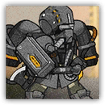
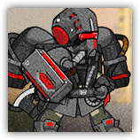

游击队突袭战士 Guerrilla Siegebreaker
近战 物理；普通 任意
|  |
爱国者的精锐突袭战士。擅长突击与空降敌方腹地作战的战士。佩戴中型装甲，单兵作战能力很强。收到战术命令后状态会得到大幅提升，攻击力大幅增加。 |
游击队突袭战士丨Guerrilla Siegebreaker
中型类人（任意），守序中立
AC 17
先攻 +5（15）
HP 45（6d8+18）
速度 30 尺
| 调整 | 豁免 | ||
|---|---|---|---|
| 力量 | 17 | +3 | +3 |
| 智力 | 11 | +0 | +0 |
| 调整 | 豁免 | ||
|---|---|---|---|
| 敏捷 | 20 | +5 | +7 |
| 感知 | 12 | +1 | +1 |
| 调整 | 豁免 | ||
|---|---|---|---|
| 体质 | 16 | +3 | +5 |
| 魅力 | 9 | -1 | -1 |
技能 特技+5，求生+3，察觉+3
装备 长剑，镶钉皮甲
感官 黑暗视觉60尺，被动察觉13
语言 通用语，乌萨斯语，萨卡兹语
CR 1（XP 200；PB +2）
特质 Traits
空降突袭 Airborne Assault。游击队突袭战士参与战斗时，若战场条件允许空降，则可以选择不进行先攻检定。此时它们会在先攻轮到20时从天而降，出现在一个其所选择的未被占据的战场空间，并以此先攻值继续行动。每次先攻轮到20时，最多仅能有两名游击队突袭战士进行此类空降。
集群战术 Pack Tactics。若游击队突袭战士的攻击目标生物周围5尺范围内存在有至少一个未失能的盟友，则游击队突袭战士对该生物进行的攻击检定具有优势。
动作 Actions
战斧 Battleaxe。近战攻击检定：+5，触及5尺。命中：7（1d10+3）挥砍伤害，若游击队突袭战士具有临时生命，还额外造成5（1d10）挥砍伤害。
游击队突袭战士组长 Guerrilla Siegebreaker Leader
近战 物理；普通 任意
|  |
爱国者精锐突袭战士中的菁英。相比普通突袭战士，有着更强的单兵作战能力，却也经常身陷囹圄。收到战术命令后状态会得到大幅提升，攻击力大幅增加。 |
游击队突袭战士组长丨Guerrilla Siegebreaker Leader
中型类人（任意），守序中立
AC 17
先攻 +5（15）
HP 67（9d8+27）
速度 30 尺
| 调整 | 豁免 | ||
|---|---|---|---|
| 力量 | 18 | +4 | +4 |
| 智力 | 12 | +1 | +1 |
| 调整 | 豁免 | ||
|---|---|---|---|
| 敏捷 | 20 | +5 | +7 |
| 感知 | 13 | +1 | +1 |
| 调整 | 豁免 | ||
|---|---|---|---|
| 体质 | 17 | +3 | +5 |
| 魅力 | 12 | +1 | +1 |
技能 特技+7，求生+3，察觉+3
装备 战斧，镶钉皮甲
感官 黑暗视觉60尺，被动察觉13
语言 通用语，乌萨斯语，萨卡兹语
CR 2（XP 450；PB +2）
特质 Traits
空降突袭 Airborne Assault。游击队突袭战士参与战斗时，若战场条件允许空降，则可以选择不进行先攻检定。此时它们会在先攻轮到20时从天而降，出现在一个其所选择的未被占据的战场空间，并以此先攻值继续行动。每次先攻轮到20时，最多仅能有两名游击队突袭战士进行此类空降。
集群战术 Pack Tactics。若游击队突袭战士的攻击目标生物周围5尺范围内存在有至少一个未失能的盟友，则游击队突袭战士对该生物进行的攻击检定具有优势。
动作 Actions
多重攻击 Multiattack。游击队突袭战士组长发动两次战斧攻击。
战斧 Battleaxe。近战攻击检定：+6，触及5尺。命中：8（1d10+3）挥砍伤害，若游击队突袭战士具有临时生命，还额外造成5（1d10）挥砍伤害。